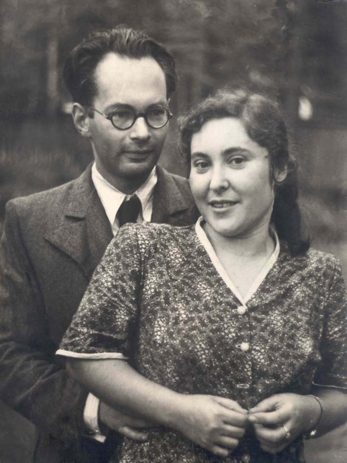
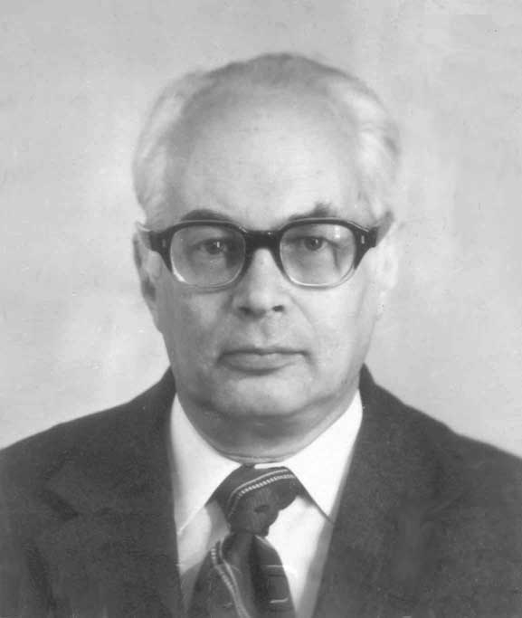

Родился 15 мая 1918 года в Москве.
Родители:
отец - Блехман Марк Осипович,
мать - Блехман (Вымениц) Дина Соломоновна,
Окончил институт Кинематографии (ВГИК), по специальности оператор. Окончил Авиационный институт (МАИ). Работал инженером на должностях ГИП, главный специалист в Теплоэлектропроекте, Гипромедпроме и др.
Крупнейший филателист СССР. Собирал марки СССР, России, авапочты СССР, Монголии, Тувы и многое другое. Участвовал во многих международных выставках марок. Лауреат VI московского фестиваля молодежи и студентов. На международных выставках под эгидой ФИП получил три большие золотые медали (единственный в СССР).
Написал ряд исследований по истории почты и филателии. Печатался в сборнике "Советский коллекционер" и журнале "Филателия СССР". Написал книжку "История почты и знаки почтовой оплаты Тувы", которая до сих пор является лучшей по истории почты и маркам Тувы.
Упоминается в электронной еврейской энциклопедии.
Дважды был женат.
Первая жена - Баккал Александра Исааковна (Шура), которая в 1948 году родила ему сына Виктора Баккала.
Вторая жена - Корнеева Ольга Антоновна, 1923 года рождения.
Умер 26 июля 1982 года в Москве от инфаркта.
Статья о Блехмане С.М. в википедии

